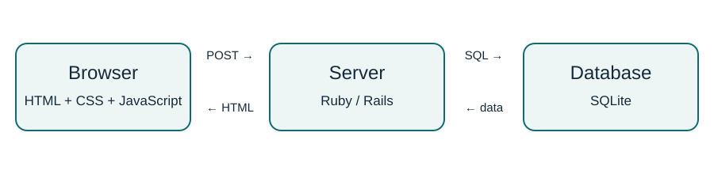

Piratkode
Fra skattekiste til Rails
Byg et spil. Giv piraten et navn. Gem jeres eventyr.
Til sidst deler I en rigtig webapp med en database.
Print med Ctrl + P: A4, 100 %, uden browserens ekstra sidehoved. Kodefelter og illustrationer fungerer også i sort-hvid.
Mit piratnavn:
Min makker:
Kom i gang med Visual Studio Code
Vi anbefaler Visual Studio Code (VS Code). Det er en editor, der farver HTML, CSS og JavaScript og hjælper med afsluttende tags og kodeforslag. Du behøver ingen udvidelser, konto eller AI-assistent til kurset.
Før første møde
Underviseren eller en voksen hjælper med installation fra den officielle downloadside. Vælg Visual Studio Code, ikke det større Visual Studio.
Den aktuelle Windows-udgave kræver Windows 10 eller 11, 64-bit. Tjek systemkrav på forhånd. På en ældre maskine, som ikke opfylder kravene, kan eleven bruge Notesblok og samme kursusfiler. Skolens eller foreningens regler for installation gælder stadig.
De første fem minutter
- Udpak repoets ZIP-fil i Stifinder. Kopiér dagens
start-mappe til din egen mappe, fxPiratkode/gang-1. - Åbn VS Code. Vælg File → Open Folder (Filer → Åbn mappe), og vælg din arbejdsmappe. Hvis editoren spørger om tillid, så få underviseren til at bekræfte, at det er de udleverede kursusfiler.
- Klik på
index.htmli venstre side. Kontrollér, at der står HTML nederst, og at filen hedder.html, ikke.html.txt. - Skriv en overskrift. Editorens forslag kan accepteres med Tab eller Enter og lukkes med Escape. Hvis den selv indsætter et afsluttende tag, skal du ikke skrive det én gang til.
- Gem med Ctrl + S. Find filen i Stifinder, og dobbeltklik på den. Se resultatet i browseren.
Fem nyttige genveje på Windows
| Genvej | Gør dette |
|---|---|
| Ctrl + S | Gem den aktuelle fil |
| Ctrl + Z | Fortryd seneste ændring |
| Ctrl + Space | Vis kodeforslag |
| Shift + Alt + F | Formatér HTML, CSS eller JavaScript |
| Ctrl + Shift + V | Vis en Markdown-vejledning pænt |
F5 bruges i browseren til at opdatere siden. F5 i VS Code starter fejlsøgning og er ikke det samme.
Brug eventuelt View → Word Wrap til lange linjer og zoom ind med Ctrl + plus. Åbn kode og browser ved siden af hinanden. Når flere filer er ændret, så gem dem alle før opdatering.
Rails i gang 4 og 5
Her bruger vi en VS Code-lignende editor direkte i browseren på underviserens server. Ruby og Rails er allerede installeret dér. Åbn den udleverede editoradresse og log ind med holdets password. Find filer i venstre side og terminalen via Terminal → New Terminal. Du skal ikke installere Ruby, Docker eller Rails på Windows.
Der er to faner: editorens adresse og appens adresse. Appen viser resultatet, når Rails-serveren er startet i terminalen. Ctrl + S gemmer kode på serveren; F5 i app-fanen opdaterer resultatet. Brug de udleverede app-adresser frem for editorens automatiske port-links.
Den lokale VS Code og browsereditoren har ikke automatisk de samme filer. De første tre gange gemmer du på din PC; de sidste to i holdets workspace på serveren. Bed underviseren om en kodekopi efter forløbet.
Kilde: VS Codes indbyggede HTML-hjælp.
Gang 1: Skattekisten
Mission: Byg et spil, hvor et klik finder guld. Du vinder ved mindst 20 guld.
Du lærer: at HTML giver indhold, CSS giver udseende, og JavaScript giver handling. Du møder en variabel, en funktion og en betingelse.
Filer: Kopiér start til din egen mappe, og åbn mappen i VS Code. Åbn index.html i browseren. Se editorhjælpen. Det færdige spil ligger i facit/index.html. Den oprindelige PDF kan også bruges til denne gang.
Plan: 120 minutter
| Minutter | Aktivitet |
|---|---|
| 0-10 | Spil underviserens eksempel. Gæt, hvordan det virker. |
| 10-20 | Åbn VS Code, find filen, og lær gem → opdater. |
| 20-40 | Byg indhold med HTML. |
| 40-55 | Giv spillet farver med CSS. |
| 55-65 | Pause væk fra skærmen. |
| 65-90 | Få knappen til at finde guld med JavaScript. |
| 90-110 | Tilføj sejr, afprøv med en makker og løs en bonus. |
| 110-120 | Vis spillet og forklar én linje kode. |
1. HTML: Byg indholdet
I index.html finder du kommentaren TRIN 1. Erstat den med:
<h1>Piratens skat</h1>
<p>Find mindst 20 guld for at vinde!</p>
<button id="kiste">Åbn skattekisten</button>
<p>Dit guld: <span id="guld">0</span></p>
<p id="besked">Er du klar, kaptajn?</p>
Gem med Ctrl + S i editoren. Skift til browseren og tryk F5. Knappen vises, men gør endnu ingenting.
Et tag fortæller, hvad noget er. <h1> starter en stor overskrift; </h1> afslutter den. <p> er et afsnit. Et id er et unikt navneskilt. JavaScript skal bruge kiste, guld og besked senere, så behold de navne.
Miniopgave: Giv overskriften et andet navn. Hvad ændrer <title> i toppen af filen? Prøv og kig på browserens faneblad.
2. CSS: Giv spillet dit look
Erstat kommentaren TRIN 2 inde i <style> med:
body {
background: #14213d;
color: white;
font-family: Arial, sans-serif;
text-align: center;
padding: 40px;
}
h1 {
color: gold;
font-size: 42px;
}
p {
font-size: 22px;
}
button {
background: gold;
color: black;
font-size: 24px;
padding: 20px;
border: 4px solid orange;
border-radius: 12px;
cursor: pointer;
}
button:hover {
background: orange;
}
h1 vælger overskrifter. { } holder indstillingerne samlet. color: gold; giver tekstfarven guld. Kolon og semikolon er en del af sproget.
Kontrol: Siden er mørk, teksten er lys, og knappen skifter farve under musen.
Designlaboratorium: Skift én værdi ad gangen. Prøv border-radius: 0px, font-size: 32px eller en anden baggrund. Bevar en tekstfarve, som er let at læse. Vis makkeren, hvilken regel du ændrede.
3. JavaScript: Få noget til at ske
Erstat kommentaren TRIN 3 inde i <script> med:
var guld = 0;
var knap = document.getElementById("kiste");
var guldtal = document.getElementById("guld");
var besked = document.getElementById("besked");
knap.onclick = function() {
var fund = Math.floor(Math.random() * 3) + 1;
guld = guld + fund;
guldtal.textContent = guld;
besked.textContent = "Du fandt " + fund + " guld!";
};
Kontrol: Ét klik giver 1, 2 eller 3 guld, og tallet på siden ændrer sig.
En variabel husker en værdi. guld = guld + fund tager den gamle værdi, lægger fundet til og gemmer det nye tal. textContent ændrer teksten i et HTML-element. En funktion samler de instruktioner, som skal køres ved et klik.
Linjen med Math.random() vælger et tilfældigt antal. Du behøver ikke lære hele regnestykket udenad. Prøv at ændre 3 til 6, og undersøg forskellen.
4. Tilføj en sejr
Indsæt dette inde i klikfunktionen, lige efter linjen der begynder med besked.textContent, og før den afsluttende };:
if (guld >= 20) {
besked.textContent = "Du vandt, kaptajn!";
knap.textContent = "Skatten er din!";
knap.disabled = true;
}
if betyder hvis. >= betyder større end eller lig med. Det er nødvendigt, fordi spilleren kan hoppe fra 19 til 22 guld. disabled slår knappen fra. F5 starter et nyt spil med 0 guld.
Makkerprøven
- Start på 0. Klik én gang. Fik du mellem 1 og 3 guld?
- Spil til mindst 20. Stopper knappen, og står der, at du vandt?
- Opdater siden. Er guldet tilbage på 0?
- Skift tastatur. Lad makkeren ændre målet til 50 både i HTML-teksten og JavaScript.
Bonusmissioner
- Let: Gør det til et rumspil med krystaller. Ret overskrift, knap og beskeder.
- Mellem: Tæl klik i en ny variabel. Vis dem i et ekstra
<span id="klik">. - Svær: Tilføj en ny knap, der starter forfra uden F5. Den skal nulstille guldet, teksten og
disabled.
Hint til svær: Find startknappen med getElementById. I dens klikfunktion sættes guld = 0, guldtallet opdateres, og knap.disabled = false.
Før du går
Vis, hvor HTML, CSS og JavaScript ligger. Forklar: Hvorfor forsvinder guldet ved F5? Skriv en sætning om, hvad du vil lave om næste gang. Gem mappen; den er dit første spil.
Gang 2: Piratprofilen
Mission: Lav et piratpas med navn og rolle. Siden skal reagere på det, du skriver.
Du lærer: formularer, label, input, select, submit, value, events og DOM. Du deler koden i HTML, CSS og JavaScript-filer.
Start: Kopiér denne gangs start-mappe til en ny arbejdsmappe. Den indeholder et færdigt layout og en formular. Dit spil fra gang 1 bliver liggende i sin egen mappe. Åbn index.html i browseren og de tre filer i VS Code. Se facit, hvis du får brug for et fungerende eksempel.
Plan: 120 minutter
| Minutter | Aktivitet |
|---|---|
| 0-10 | Vis et spil fra sidste gang. Find en variabel og en betingelse. |
| 10-25 | Undersøg de tre filer og deres forbindelser. |
| 25-45 | Udforsk og ændr formularens HTML. |
| 45-55 | Find elementerne i JavaScript. |
| 55-65 | Pause. |
| 65-85 | Fang submit og byg piratpasset. |
| 85-105 | Tilføj live-tekst og makkerprøve. |
| 105-115 | Bonusmission og eget design. |
| 115-120 | Forklar forskellen på value og textContent. |
1. Tre filer, én hjemmeside
Åbn index.html, og find disse forbindelser:
<link rel="stylesheet" href="style.css">
<script src="app.js"></script>
HTML henter udseendet fra style.css og handlingerne fra app.js. Derfor skal alle tre filer blive i samme mappe. <script> står nederst, så HTML-elementerne er læst, før JavaScript leder efter dem.
Prøv: Skift baggrundsfarven i style.css. Gem filen og opdater browseren. Der skal ikke stå <style> i en CSS-fil eller <script> i en JavaScript-fil.
2. Undersøg formularen
Find disse linjer i index.html:
<label for="navn">Piratnavn</label>
<input id="navn" name="pirat" maxlength="24" required>
label er feltets beskrivelse. for="navn" peger på id="navn". Klik på teksten Piratnavn: markøren hopper ind i feltet. required betyder, at browseren kræver indhold; maxlength begrænser længden. name er navnet, serveren senere kan bruge til at modtage feltet. id og name har forskellige job.
Dropdown-menuen er et <select> med flere <option>. Knappen har type="submit", som sender formularen. Man kan også sende med Enter fra navnefeltet.
Prøv: Tilføj denne mulighed inde i <select>:
<option value="Skibskok">Skibskok</option>
Stop og tænk: Hvad sker der, når du prøver at sende formularen uden navn? Hvad sker der med siden, hvis du sender et gyldigt navn, før vi har skrevet JavaScript?
3. Find elementerne
Skriv i app.js, under eller i stedet for kommentarerne:
var formular = document.getElementById("profil-form");
var navn = document.getElementById("navn");
var rolle = document.getElementById("rolle");
var preview = document.getElementById("preview");
var resultat = document.getElementById("resultat");
DOM er browserens model af sidens elementer. getElementById finder et element i modellen. Det er samme teknik, som fandt skattekisteknappen.
4. Reagér på formularen
Skriv dette under variablerne:
formular.onsubmit = function(event) {
event.preventDefault();
var piratnavn = navn.value.trim();
if (piratnavn === "") {
resultat.textContent = "Skriv et piratnavn, ikke kun mellemrum.";
return;
}
resultat.textContent = piratnavn + " er nu " + rolle.value + "!";
};
event.preventDefault() stopper browserens normale afsendelse, så vi kan opdatere siden med JavaScript. value er det, spilleren har skrevet eller valgt. trim() fjerner mellemrum i begyndelsen og slutningen. return stopper funktionen, når input er forkert.
Kontrol: Skriv Kaptajn Krabbe, vælg Navigatør, og send. Nu vises navnet og rollen i kortet uden en ny sideindlæsning.
5. Gør kortet levende
Tilføj efter submit-funktionen:
navn.oninput = function() {
preview.textContent = "Hej, " + navn.value + "!";
};
input-hændelsen sker, når feltet ændres. Det føles dynamisk, fordi browseren ændrer siden med det samme. Denne kode sender stadig ingen data til en server.
Makkerprøven
- Klik på en label og brug Tab til at hoppe gennem felterne.
- Send et tomt navn. Browseren skal stoppe dig.
- Prøv kun mellemrum. JavaScript skal vise en besked.
- Skriv
<b>Pirat</b>som navn. Tegnene skal vises som tekst, ikke som fed HTML. Derfor bruger vitextContenttil brugerens tekst. - Tryk F5. Profilen er ikke gemt af vores kode. Browseren kan dog selv genudfylde nogle formularfelter.
Bonusmissioner
- Let: Lav dit eget design på profilkortet i
.korti CSS. - Mellem: Tilføj et skibsnavn med
labeloginput. Find feltet i JavaScript og brug værdien i resultatet. - Svær: Tilføj en farvevælger (
type="color"), og brug densoninputtil at ændre kortets kantfarve. Hint: find kortet med et id, og brugkort.style.borderColor = farve.value.
Før du går
Forklar, hvad der er forskellen på at skrive i et felt og at sende en formular. Peg på input og output i din kode. Næste gang lærer du at gemme data, når siden genindlæses.
Gang 3: Den lokale logbog
Mission: Byg en liste over pirat-eventyr, der stadig findes efter F5.
Du lærer: objekter, arrays, push, forEach, nye HTML-elementer, JSON og localStorage. Du undersøger forskellen på at vise data og gemme data.
Start: Kopiér denne gangs start-mappe. Formular og CSS er klar. I app.js er felterne allerede fundet. Hjælpekode til indlæsning, validering og sletning er udleveret, så du kan fokusere på de tre markerede trin. Startversionen gemmer endnu intet.
Plan: 120 minutter
| Minutter | Aktivitet |
|---|---|
| 0-10 | Hvorfor forsvandt vores data? Gæt, hvor de kan gemmes. |
| 10-25 | Tegn et objekt og en liste på papir. |
| 25-45 | Vis en liste med forEach og createElement. |
| 45-55 | Tilføj indlæg fra formularen. |
| 55-65 | Pause. |
| 65-85 | Gem JSON og prøv F5. |
| 85-100 | Test genåbning, sletning og anden browser. |
| 100-115 | Bonusmission og design. |
| 115-120 | Forklar, hvorfor makkeren ikke ser dine indlæg. |
1. Ét objekt, mange indlæg
Et objekt samler data om én ting:
var eventyr = { pirat: "Kaptajn Krabbe", tekst: "Vi fandt en ø!" };
Et array er en liste. I vores kode hedder listen indlaeg:
var indlaeg = [];
[] starter en tom liste. Vi kan tilføje et objekt med indlaeg.push(eventyr).
Papirmission: Tegn tre kort med felterne pirat og tekst. Læg dem i en række. Ét kort er et objekt; hele rækken er et array. Der er ikke brug for at skrive papirøvelsens eventyr ind i programmet.
2. Vis listen på siden
Find funktionen visIndlaeg i app.js. Erstat kun kommentaren TRIN 1 mellem dens klammer med:
liste.textContent = "";
indlaeg.forEach(function(indlaeg) {
var punkt = document.createElement("li");
punkt.textContent = indlaeg.pirat + ": " + indlaeg.tekst;
liste.appendChild(punkt);
});
Den første linje rydder den viste liste, så vi ikke får dubletter. forEach kører funktionen én gang for hvert indlæg. createElement("li") laver et nyt listepunkt. appendChild sætter det ind i <ul id="liste">.
Her hedder det enkelte indlæg indlaeg inde i funktionen. Det er en lokal variabel; udenfor er indlaeg hele listen. Prøv at læse koden højt med ordene listen og dette indlæg.
3. Lav et objekt fra formularen
Find TRIN 2 inde i formular.onsubmit, og erstat kommentaren med:
var nytIndlaeg = {
pirat: pirat.value.trim(),
tekst: tekst.value.trim()
};
indlaeg.push(nytIndlaeg);
De næste linjer i startkoden kalder allerede visIndlaeg() og gemIndlaeg(). De skal blive stående. Bagefter tømmes tekstfeltet, mens piratnavnet bliver stående.
Kontrol: Skriv to eventyr. Begge skal stå i listen. F5 mister dem endnu, fordi vi mangler den næste del.
4. Gem i browseren
Find TRIN 3 inde i gemIndlaeg. Erstat kommentaren og linjen med beskeden om startversionen med:
localStorage.setItem(noegle, JSON.stringify(indlaeg));
statusfelt.textContent = "Gemt i denne browser.";
localStorage er browserens lille lager. Det gemmer tekst. JSON.stringify omdanner listen til en tekst, der kan genskabes senere. noegle er navnet på vores lagerplads; det står øverst i filen. Vi bruger én særlig nøgle og sletter aldrig andre hjemmesiders data.
Den udleverede hentIndlaeg() gør det omvendte: den læser med getItem og genskaber listen med JSON.parse. Nederst i filen bliver indlæggene hentet og vist, når siden åbner.
Kontrol: Tilføj et nyt eventyr. Tryk F5. Det skal stadig være der.
5. Undersøg lagringen
- Luk fanen, og åbn præcis den samme fil eller webadresse i samme browser. Er teksten der?
- Åbn siden i en anden browser. Den browser har sit eget lager.
- Åbn siden på makkerens maskine. Der ligger ikke automatisk en kopi af din logbog.
- Tryk Slet min lokale logbog, vælg først Annuller og bagefter OK. Opdater siden og se forskellen.
Vigtigt: Lokal lagring er ikke vores fælles database. Privat browsing, browseroprydning og flytning af filen kan ændre eller fjerne lagringen. Gem ikke noget vigtigt eller personligt her.
Hvis du får beskeden "Kan ikke gemme": Spørg underviseren. Browseren kan blokere lagring fra en dobbeltklikket fil. Brug den udleverede HTTPS-adresse til samme eksempel. Skifter du adresse, flytter de gamle lokale data ikke automatisk med.
Hjælpekoden
try forsøger noget; catch fanger en fejl og viser en forståelig besked. Den udleverede kode tjekker også formen på data, begrænser listen til 100 indlæg og spørger før sletning. Du behøver ikke skrive den del selv.
Vi bruger textContent frem for innerHTML, fordi indlæg skal være tekst. Prøv at gemme <h1>Skat!</h1> som eventyr; det må ikke blive til en rigtig overskrift.
Bonusmissioner
- Let: Vis antallet af indlæg. Hint:
indlaeg.lengthog et ekstra tekstfelt. - Mellem: Vis nyeste indlæg først. Undersøg
unshiftsom alternativ tilpush. - Svær: Giv hvert indlæg et tidspunkt med
new Date().toLocaleString(). Tilføj en ny egenskab i objektet, og vis den. Gamle indlæg mangler egenskaben, så vælg en reserveværdi.
Før du går
Tegn tre kasser: JavaScript-hukommelse, browserens lager og server. Placér dagens data i de rigtige kasser. Hvad mangler vi, før alle pirater kan læse den samme logbog?
Gang 4: Flaskepost med Ruby og Rails
Mission: Send et eventyr til en server, og få en rigtig HTML-side tilbage.
Du lærer: lidt Ruby, HTTP, GET, POST, routes, controller og view. Vi bruger Rails til at samle delene. Denne gang viser vi teksten; næste gang gemmer vi den.
Start: Underviseren giver jer to adresser og et holdpassword: én til browsereditoren og én til jeres app. Browsereditoren ligner VS Code. Der er allerede installeret Ruby, Rails og SQLite på serveren. I skal ikke installere dem på jeres Windows-maskine.
Plan: 120 minutter
| Minutter | Aktivitet |
|---|---|
| 0-10 | Genbesøg den lokale logbog. Hvorfor kan andre ikke se den? |
| 10-25 | Åbn fjerneditoren, start appen, og find tre vigtige filer. |
| 25-40 | Ruby-laboratorium i terminalen. |
| 40-55 | Følg en formular fra browser gennem en route til en controller. |
| 55-65 | Pause. |
| 65-85 | Modtag og vis flaskeposten. |
| 85-100 | Afprøv tomme felter, lang tekst og HTML-tegn. |
| 100-115 | Egen ændring og bonusmission. |
| 115-120 | Forklar datarejsen for en makker. |
1. Start jeres app
Åbn browsereditoren. Hvis den viser Restricted Mode, så få underviseren til at bekræfte tillid til den udleverede kursusmappe. Vælg derefter Terminal → New Terminal. Skriv de tre linjer, én ad gangen:
cd /workspace/undervisning/04-flaskepost/start
bin/rails db:prepare
bin/rails server -b 0.0.0.0
Terminalen bliver optaget, mens serveren kører. Det er normalt. Åbn jeres app-adresse i en anden fane; log ind med holdnavn og holdpassword. Serveren modtager endnu ikke navn og tekst korrekt, fordi vi mangler to trin.
Vigtigt: Luk ikke terminalen under arbejdet. For at stoppe serveren klikker du i terminalen og trykker Ctrl + C. Kun én Rails-server må bruge port 3000 i jeres miljø ad gangen.
Åbn filerne i mappen 04-flaskepost/start. Arbejdet ligger nu på serveren, ikke på din Windows-maskine. Gem stadig med Ctrl + S. Rails indlæser kodeændringer, når du opdaterer siden.
2. Fem minutter med Ruby
Åbn endnu en terminal. Skriv irb og prøv én linje ad gangen:
pirat = "Kaptajn Krabbe"
guld = 12
guld + 8
"Hej, #{pirat}!"
guld >= 20
Ruby bruger ikke var, og variabler behøver normalt ikke semikolon. #{pirat} sætter en variabel ind i en tekst med dobbelte anførselstegn. Ruby og JavaScript er forskellige sprog, men begge kan huske værdier og tage beslutninger.
Prøv derefter:
if guld >= 20
puts "Du vandt!"
else
puts "Find mere guld."
end
puts skriver tekst. end afslutter blokken. Skriv exit for at forlade Ruby-laboratoriet. Disse forsøg skal ikke kopieres ind i appens filer.
3. Følg flaskeposten

Åbn config/routes.rb:
get "flaskepost", to: "flaskepost#new"
post "flaskepost", to: "flaskepost#create"
GET beder om en side. POST sender formularens data. En route er en vejviser: den forbinder en adresse og en HTTP-metode med en bestemt controller-metode.
Åbn app/views/flaskepost/new.html.erb. Find formularen:
<%= form_with url: flaskepost_path, method: :post, local: true do |form| %>
Rails laver et almindeligt HTML-form ud fra denne kode. form.label, form.text_field og form.text_area laver felter, som dem fra gang 2. Vi bruger ikke JavaScript til at stoppe submit denne gang. Browseren sender formularen til serveren.
Undersøg: Højreklik på formularen i app-fanen og vælg Vis sidens kilde. Kan du finde <form>, name="pirat" og et skjult sikkerhedsfelt? Browseren modtager HTML, ikke Ruby-koden.
4. Læs formularens data
Åbn app/controllers/flaskepost_controller.rb. Find de to linjer med TRIN 1 inde i create. Erstat dem med:
@pirat = params[:pirat].to_s.strip
@tekst = params[:tekst].to_s.strip
params indeholder data fra forespørgslen. :pirat er feltets navn. to_s gør værdien til tekst, og strip fjerner mellemrum i enderne. @ gør variablen tilgængelig i det view, som controlleren viser.
Den udleverede kode kontrollerer længderne. Godkendte data vises med render :vis. Ellers vises formularen igen med en fejlbesked. Vi kontrollerer også på serveren, fordi browserens required kan omgås.
5. Vis svaret
Åbn app/views/flaskepost/vis.html.erb. Erstat kommentaren TRIN 2 med:
<p><strong><%= @pirat %></strong>: <%= @tekst %></p>
ERB er HTML med små stykker Ruby. <%= ... %> beregner noget og skriver resultatet ind i HTML. <% ... %> kører kode uden selv at skrive et resultat, fx en betingelse.
Kontrol: Gem begge filer. Send en flaskepost. Den nye side skal vise jeres navn og eventyr. Ingen data er endnu lagt i en database.
Makkerprøven
- Send et normalt eventyr. Hvilken tekst kommer fra formularen?
- Prøv kun mellemrum. Du skal få en forståelig fejl.
- Skriv
<script>alert(1)</script>som eventyr. Det skal vises som tekst. Rails escaper output; brug ikkerawellerhtml_safepå brugerens tekst. - Klik Send en ny flaskepost. Den nye GET-side er tom. Browseren kan spørge om genafsendelse, hvis du i stedet trykker F5 på et POST-svar; det er ikke en database.
- Åbn appen på makkerens maskine. Der er ingen fælles historik endnu.
Bonusmissioner
- Let: Ændr sidens overskrift og knaptekst. Find ud af, hvilke dele der ligger i layoutet, og hvilke der ligger i det enkelte view.
- Mellem: Tilføj skibsnavn i formularen. Læs det med
params[:skib].to_s.strip, og vis@skibi svaret. Lav også en længdekontrol. - Svær: Vis en særlig besked, hvis eventyret nævner
skat. Hint:@tekst.downcase.include?("skat")og enifi viewet.
Før du går
Tegn: browser → route → controller → view → browser. Fortæl, hvor Ruby kører, og hvorfor en lokal HTML-fil ikke kan køre Rails. Gem alle filer. Behold mappen; næste gang åbner vi en ny startmappe med samme flaskepost og en databaseøvelse.
Gang 5: En fælles logbog med database
Mission: Gem eventyr, så andre kan læse dem, og vis appen online.
Du lærer: database, tabel, række, model, migration, validering og gem/hent med Active Record. Vi bruger SQLite: en rigtig database i en fil på serveren.
Start: Brug samme browsereditor. Gem gang 4, og stop dens Rails-server med Ctrl + C. Gang 5 har sin egen startmappe; dit arbejde fra gang 4 bliver liggende. Flaskepostdelen er allerede færdig i den nye mappe. Dagens nye filer er markeret nedenfor.
Plan: 120 minutter
| Minutter | Aktivitet |
|---|---|
| 0-10 | Tegn forskellen på en lokal liste og en fælles database. |
| 10-25 | Undersøg modellen og migrationen; start appen. |
| 25-45 | Hent indlæg og forstå listen i viewet. |
| 45-55 | Gem første indlæg. |
| 55-65 | Pause. |
| 65-85 | Test fra to browsere, fejl og genstart. |
| 85-100 | Egen ændring, validering og bonus. |
| 100-115 | Underviserstyret deploy med Kamal; se adressen virke. |
| 115-120 | Vis jeres app og forklar, hvor data bor. |
Deploy er forberedt og øvet af underviseren. Hvis netværket driller, viser I den fungerende app på udviklingsadressen; databaseøvelsen kan stadig gennemføres.
1. Fra papirkort til database
Tegn en tabel med kolonnerne id, pirat og tekst. Skriv tre eventyr på hver sin række. Databasen husker disse rækker for os. id er et unikt nummer; to pirater må gerne have samme navn.
I sidste gang kendte serveren kun den aktuelle formular. Nu gemmer vi den i en database, som serveren kan læse igen senere. Det kaldes persistens: data overlever den enkelte forespørgsel og en genstart.
2. Modellen og migrationen
Åbn 05-faelles-logbog/start/app/models/entry.rb:
class Entry < ApplicationRecord
validates :pirat, presence: true, length: { maximum: 24 }
validates :tekst, presence: true, length: { maximum: 280 }
end
En model forbinder Ruby med data. Entry betyder et indlæg. Rails forbinder modellen Entry med tabellen entries. Vi bruger engelske navne til Rails-klasser og almindelige danske tekster på siden.
validates fortæller, hvilke regler der gælder: begge felter skal have indhold, og de må ikke være for lange.
Åbn filen i db/migrate. Den har et tidsstempel i navnet:
create_table :entries do |t|
t.string :pirat, null: false
t.text :tekst, null: false
t.timestamps
end
En migration beskriver en ændring af databasens struktur. Denne laver tabellen. Rails tilføjer et id; timestamps tilføjer oprettelses- og ændringstid. Migrationen ligger klar som hjælpekode; du skal forstå felterne, ikke lære kommandoerne udenad.
Start nu appen i terminalen:
cd /workspace/undervisning/05-faelles-logbog/start
bin/rails db:prepare
bin/rails server -b 0.0.0.0
db:prepare opretter databasen og kører de migrationer, der mangler. Kommandoen sletter ikke eksisterende indlæg. Åbn eller opdater app-adressen. Listen er tom, og startversionen gemmer endnu intet.
3. Hent data
Åbn app/controllers/entries_controller.rb. Der er to linjer med TRIN 1. Erstat hver af dem med:
@entries = Entry.order(id: :desc).limit(50)
Her beder vi modellen hente de seneste 50 indlæg, med højeste id først. @entries er en samling af modeller. Den ene linje bruges til den almindelige side, den anden til at vise siden igen ved ugyldigt input.
Åbn app/views/entries/index.html.erb, og find:
<% @entries.each do |entry| %>
<li><strong><%= entry.pirat %></strong>: <%= entry.tekst %></li>
<% end %>
Ruby-each minder om JavaScripts forEach: én tur gennem løkken for hvert indlæg. Viewet er allerede skrevet, så det kan vise de data, I henter.
4. Gem et indlæg
Tilbage i entries_controller.rb: erstat linjen if false # TRIN 2... med:
if @entry.save
Den udleverede linje før betingelsen bygger en ny model:
@entry = Entry.new(entry_params)
new bygger et objekt i hukommelsen. save kontrollerer reglerne og gemmer i databasen, hvis de er opfyldt. Derfor er new alene ikke nok.
entry_params nederst i filen accepterer kun felterne pirat og tekst. Når det lykkes, sender redirect_to browseren til listen. Det gør, at almindelig F5 ikke sender den samme formular igen. Hvis data er forkerte, viser Rails formularen med de indtastede værdier og en fejlbesked.
Kontrol: Gem filen, opdater browseren og send et eventyr. Det skal dukke op i listen, og formularen bliver tom.
5. Se ind i databasen
Åbn en ekstra terminal i samme appmappe:
bin/rails runner 'puts Entry.count'
Det viser antallet af indlæg. Rails bruger SQL under overfladen. Underviseren viser en forespørgsel direkte i SQLite:
sqlite3 storage/development.sqlite3 'SELECT id, pirat, tekst FROM entries;'
SELECT læser rækker. En gemning bruger normalt INSERT. I har fået en første smagsprøve på begge lag: Ruby-modellen og databasen bag den.
Makkerprøven
- Gem to eventyr. Er det nyeste øverst?
- Tryk F5 flere gange. Antallet af indlæg skal være uændret.
- Åbn samme app-adresse på en anden maskine og log ind. Kan I læse begge indlæg? En anden holds adresse har sin egen database.
- Stop Rails-serveren med Ctrl + C og start den igen med samme kommando og mappe. Er indlæggene der stadig?
- Send kun mellemrum. Der skal komme en fejl og ingen ny række.
- Skriv
<b>Skat!</b>i et eventyr. Det skal vises som tekst, ikke udføres som HTML.
Listen opdateres ved en ny sideindlæsning, ikke automatisk i alle åbne faner. Klik Hent nyeste eventyr, når en makker har skrevet.
Bonusmissioner
- Let: Vis tidspunktet under hvert indlæg. Hint:
entry.created_at.strftime("%d/%m %H:%M"). - Mellem: Sæt tekstgrænsen til 140 tegn. Ret modellen, formularens
maxlengthog fejlbeskeden, så regler og beskeder stemmer overens. Undersøg, om serveren også afviser for lang tekst. - Svær: Tilføj et skibsnavn via en ny migration, model, formular og
entry_params. Få underviseren til at hjælpe med migrationskommandoen. Redigér ikke en allerede kørt migration for at ændre tabellen.
6. Gør appen tilgængelig med Kamal
Underviseren hjælper med at tage en kopi af jeres færdige kode, gemme den i Git og køre deployment. I ændrer selv en overskrift, som gør jeres app genkendelig.
Se forløbet: kode → Docker-image → server → webadresse. Kamal starter appen og forbinder adressen med den. Databasen ligger i en separat volume, som bliver bevaret, når appens kode udskiftes.
Udviklingsdatabasen flyttes ikke automatisk til den publicerede app. Skriv et nyt testeventyr på den publicerede adresse, deploy en lille tekstændring, og kontrollér, at indlægget stadig findes. Det er vores sidste persistensprøve.
Før du går
Forklar med egne ord: Hvad kører i browseren? Hvad kører på serveren? Hvor gemmes eventyrene? Hvad er forskellen på at gemme kode i Git og at gemme data i SQLite?
Du har nu bygget både en hjemmeside, et spil, en formular, dynamisk indhold og en app med database.
Ordbog og fejlfinding
Ordbog
| Ord | Kort forklaring |
|---|---|
| HTML | Beskriver indholdet på en side. |
| Tag | En markering som <p> eller </p>. |
| CSS | Regler for sidens udseende. |
| JavaScript | Kode, vi kører i browseren for at reagere på handlinger. |
| Variabel | Et navn, som peger på en værdi. |
| Funktion/metode | En navngivet eller samlet portion kode. |
| Event | Noget der sker, fx klik, input eller submit. |
| DOM | Browserens model af sidens elementer. |
| Formular | Felter og en måde at sende deres indhold på. |
| Validering | At kontrollere, om data følger reglerne. |
| Objekt | Flere egenskaber samlet om én ting. |
| Array | En liste med værdier eller objekter. |
| JSON | En tekstform, som kan beskrive lister og objekter. |
| localStorage | Lager i én browser, knyttet til sidens adresse. |
| Server | En computer/proces, der svarer på browserens forespørgsler. |
| HTTP, GET, POST | Måden browser og server taler sammen; hent en side eller send data. |
| Ruby | Programmeringssproget bag vores Rails-kode. |
| Rails | Et Ruby-framework med færdige dele til webapps. |
| Route | Vejviser fra en webadresse og metode til controllerkode. |
| Controller | Modtager en request og vælger, hvad der skal ske. |
| View/ERB | HTML-skabelon, der kan vise værdier fra Ruby. |
| Model | Ruby-objekt med regler og adgang til data. |
| Database | Struktureret lager med tabeller og rækker. |
| SQLite | En database, der ligger i en fil og ikke kræver en separat serverproces. |
| SQL | Sprog til at læse og ændre databasedata. |
| Migration | En versioneret ændring af databasens struktur. |
| Persistens | At data bliver bevaret mellem forespørgsler/genstarter. |
| Docker-image | En pakket opskrift på app og dens runtime. |
| Container | Et kørende miljø baseret på et image. |
| Volume | Et lager, som kan overleve en containers udskiftning. |
| Deploy | At udgive en version af koden til en kørende app. |
| Git-commit | Et gemt trin i programkodens historie; det er ikke en databasebackup. |
Find fejlen
| Symptom | Prøv først |
|---|---|
| Ændringen vises ikke | Gem den rigtige fil. Opdater den rigtige browserfane. |
| HTML åbner som tekst | Kontrollér filtypen; filen må ikke hedde .html.txt. |
| CSS virker ikke | Kontrollér href, filnavn og at filen er i samme mappe. |
| JavaScript reagerer ikke | Kontrollér id'er og store bogstaver. Åbn F12 → Console og læs første fejl. |
| En liste vises dobbelt | Ryd listen før du tegner den igen; undersøg visIndlaeg. |
| Lokal logbog er væk | Samme browser, samme adresse og ikke privat browsing? Spørg før du sletter lageret. |
| Forkerte æ/ø/å | Gem som UTF-8, og behold <meta charset="utf-8">. |
| Editor-login virker, men appen viser 502 | Start Rails i editorens terminal. Kontrollér mappe og port. |
| Address already in use | Stop den gamle Rails-proces med Ctrl + C. Start ikke flere på port 3000. |
| Blocked host | Underviseren kontrollerer APP_HOST og proxyens Host-header. |
| Rails viser en syntax error | Gå til den nævnte fil/linje; se efter et manglende end eller anførselstegn. |
| Databasetabellen mangler | Kør bin/rails db:prepare fra den rigtige appmappe. |
| Startversionen af gang 5 gemmer ikke | Er begge TRIN 1-linjer og if false erstattet? |
| Makkeren ser ikke mit indlæg | Brug samme app-adresse og genindlæs. Det er ikke en live-chat. |
| Produktionsdata mangler efter deploy | Underviseren kontrollerer volume-navn og DATABASE_PATH. Opret ikke en ny volume ved hvert deploy. |
Tre gode fejlvaner
- Læs den første fejl, ikke alle fejl på én gang.
- Lav én lille ændring, gem og prøv igen.
- Forklar din forventning til en makker, før I kopierer fra facit.